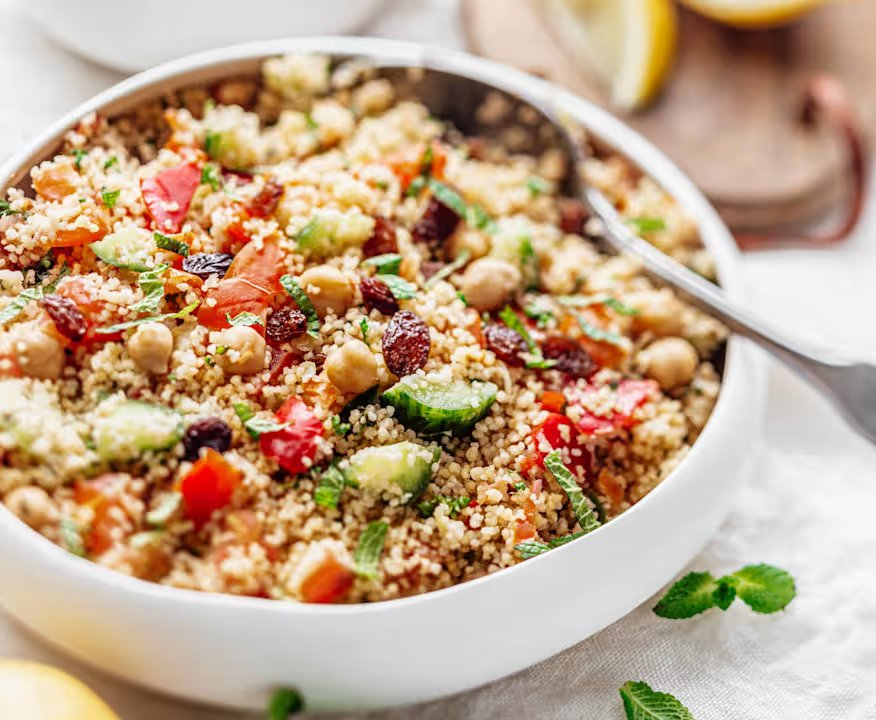

Taboulé
Ingredients
8×
- 50 g d'eau
- 300 g de semoule moyenne
- 30 g d'huile d'olive
- 4 c. à s. de jus de citron
- 1 c. à c. de sel
- 2 pincées de poivre
- 10 feuilles de menthe
- 5 brins de persil
- 80 g d'oignons doux
- 500 g de tomates
- 200 g de concombre
- 160 g de poivron
- 20 g de raisins secs
- 100 g de pois chiches

Préparation
Étape 1
Mélanger 50 g d'eau, 300 g de semoule moyenne, 30 g d'huile d'olive, 4 c. à s. de jus de citron, 1 c. à c. de sel et 2 pincées de poivre 15 sec/sens inverse/vitesse 3.5. Réserver dans un saladier.
Étape 2
Hacher 10 feuilles de menthe, 5 brins de persil et 80 g d'oignons doux 5 sec/vitesse 5.
Étape 3
Ajouter 500 g de tomates, 200 g de concombre et 160 g de poivron en morceaux, mixer 5 sec/vitesse 4.
Verser sur la semoule avec 20 g de raisins secs et 100 g de pois chiches égouttés, mélanger.
Étape 4
Laisser reposer 30min au réfrigérateur. Égrainer à la fourchette avant de servir.